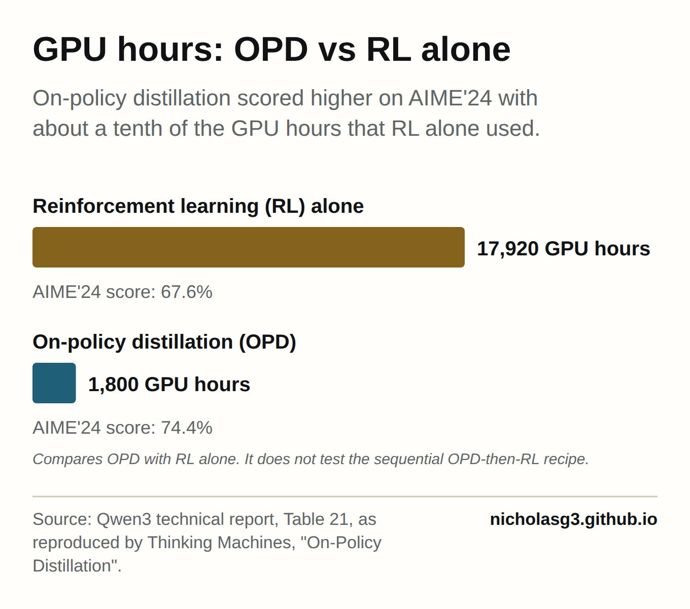

Much of what makes an artificial intelligence (AI) model useful at a particular job is added late, in a stage called post-training. Post-training elicits targeted behaviour such as instruction following, maths reasoning or chat[1]. The stage matters to any organisation that wants its own model, because smaller models with stronger training often outperform larger, generalist models in their trained domains[1]. Such models can also be deployed locally for privacy or security, updated more easily and run more cheaply[1]. The obstacle has been the recipe. Good post-training requires a complex stack, often built on proprietary data and reward models, which frontier labs can run but which can be difficult or prohibitively expensive for other practitioners to replicate[1].
The compute at stake is large. The Qwen3 technical report compared two methods on the 2024 American Invitational Mathematics Examination (AIME). Reinforcement learning (RL), in which a model learns from rewards for good answers, scored 67.6% using 17,920 graphics processing unit (GPU) hours, and on-policy distillation scored 74.4% using 1,800[1]. The better method reached a higher score on about a tenth of the compute.
Two training styles and a question of order
The first style is RL with verifiable rewards (RLVR). The model attempts a problem and earns a reward when its final answer checks out. That reward is sparse, which makes RL inefficient for many applications[1].
The second style is on-policy distillation (OPD). The student model practises on its own attempts while a stronger teacher model gives guidance at every step. It fixes a flaw in the older approach, supervised fine-tuning (SFT) on teacher outputs, where the student learns in the teacher's situations instead of the ones it will meet itself[1]. The efficiency gap is wide. Starting from an SFT-trained model at 60% on AIME, OPD reached 70% in about 150 training steps[1], where plain SFT would need an estimated 2M prompts[1].

Teams that want both styles face a choice of order. Earlier work fused the dense OPD signal and the sparse RL reward within a single training step[2]. A September 2026 preprint by Li et al. tests running them one after the other. The question now reaches many teams: arXiv papers matching the phrase "on-policy distillation" rose from 11 in the last quarter of 2025[3] to 261 between July and late September 2026[4], close to the 263 matching "verifiable rewards"[5], though a phrase count says nothing about actual use.
Three findings in plain words
One example does most of the work of a full dataset. Here a "state" means a situation the model reasons through. Fu et al. find that OPD trained on a single query already reaches 71.5% of the states full-data OPD visits[6]. With 16 semantically distinct queries, coverage reaches 98.9% and matches full-data training[6]. Their verdict is that OPD is "data-overfed but algorithm-starved"[6]. The binding limit is optimisation steps, and extra prompts add little.
The order of the two styles matters. Li et al. report that OPD first and RL second consistently beat pure OPD, pure RLVR and every joint baseline on logic and maths reasoning benchmarks[2]. In their account, optimising the two signals together makes them interfere[7]. In sequence, OPD widens the student's coverage of solutions the teacher supports and RL then sharpens within that coverage[2]. A second study, by Xu et al., tests a staged workflow and advises giving the student sparse reward only after the distillation "bridge"[8]. In that study, removing any one stage lowers the result[8]. That makes two works, and only Li et al. compares sequential with joint training directly.

These methods mostly refine existing ability, and new ability comes from the teacher. Yue et al. find that RLVR does not elicit fundamentally new reasoning patterns[9] and that RLVR-trained reasoning originates from and is bounded by the base model[9]. By contrast, distillation can bring in new reasoning patterns from the teacher[9]. Wang et al. describe OPD as steering the student toward correct reasoning paths without raising its capability ceiling[10]. I read this as a division of labour: the teacher is the source of new ability, and the two training styles transfer and polish it.
How much weight the evidence bears
All three seed papers are September 2026 preprints, and the ordering result rests on one group's experiments. The compute comparisons come through a single blog post. Attention also went elsewhere: the one-example paper drew 102 upvotes on Hugging Face's paper pages[11], against 0 for the sequential paper[7]. On Hacker News, one reader asked a startup for ablations isolating OPD's contribution[12], meaning tests that remove one component to measure its effect. Separately, one public model release admitted its first upload was the merged base model instead of the final distilled model[13], so claims of OPD use are hard to check from outside.
What changes for teams that post-train models
The data lesson is narrow. For teams running OPD, the prompt set that OPD itself consumes can be small. The finding says nothing about SFT data or RL data. My extrapolation is that effort shifts from collecting more OPD prompts toward choosing a few distinct ones and toward scheduling. Li et al. offer a switching rule. Watch the OPD score on held-out problems to decide when to move to RL, and prefer OPD over SFT as the starting point for RL[2].
A simple 2x2 organises the options:
- One axis asks whether supervision falls on the process or on the outcome.
- The other asks whether the signal comes from a teacher or from the student.
OPD occupies the process-and-teacher cell. Plain RLVR on the student is outcome-and-self. Xu et al. begin in outcome-and-teacher, running RL on the teacher first. Process-and-self belongs to methods that build a teacher from the model's own RLVR training trajectory[14]. The evidence favours a planned route through these cells.
Information systems (IS) research on project control offers a contrast. It is an analogy about how organisations govern work and is no evidence about models. Kirsch found that IS project stakeholders use a portfolio of control modes, formal and informal[15]. She divides formal control into behavioural and outcome control[15]. Choudhury and Sabherwal found that outsourced software projects are dominated by outcome controls at the start[16] and that behaviour controls are often added later[16]. Those projects often needed significant extra controls after performance problems[16]. The winning post-training recipe runs the other way, with process guidance first and outcome reward second. My reading is that a teacher model makes process supervision cheap from day one, a luxury outsourcing managers rarely have.

What changes for labs and the field
At the frontier, the entry bar rises. NVIDIA (a chip maker) built Nemotron-Cascade 2, which adds multi-domain OPD from its strongest intermediate teacher models during RL[17]. Xiaomi's MiMo-V2-Flash uses multi-teacher OPD in post-training[18]. Xiaomi reports that this approach beats mixed-RL, cascade-RL, off-policy fine-tune and parameter-merge baselines[18]. Both recipes require owning several strong teachers.
Followers may face a lower bar. Thinking Machines distilled with Qwen3-32B as teacher and Qwen3-8B-Base as student[1]. It measured a 9x compute reduction over SFT when the SFT data already exists, and about 30x when the teacher's sampling is counted[1]. It also notes that any instruction-tuned open-weight model can serve as the scoring model[1]. An open-weight model is one whose trained parameters are public. A self-teacher paper goes further. It argues that OPD is bottlenecked by teacher quality[14] and reports beating RLVR-only training and on-policy self-distillation in every setting it tested[14]. My extrapolation is a fork. Frontier labs will compete on portfolios of teachers, and followers will compete on access to good open-weight ones.
Management research warns against locking in one recipe. March frames learning as a balance between exploring new possibilities and exploiting old certainties[19]. He argues that processes that refine exploitation faster than exploration win in the short run and become self-destructive in the long run[19]. In March's sense, RL that only sharpens existing behaviour is exploitation. Levinthal shows that the peak an organisation discovers depends on its starting position[20]. That echoes the finding that RLVR is bounded by the base model. These too are analogies. As a business consequence, I expect two firms running the same recipe from different base models to land in different places.
The fixed order is also contested. One method adds distillation to RL with a weight that gives direct control over the exploration-exploitation trade-off[21]. Another switches adaptively between SFT and RL based on reward feedback[22] and reports significantly outperforming traditional sequential pipelines[22]. That counterpoint concerns SFT followed by RL, a different pairing from Li et al.'s, but it cautions against treating any schedule as final. The theory is unsettled as well, with one commenter arguing that SFT already maximises the RL objective with a dense reward[23]. My extrapolation is that the training mix becomes a setting teams tune and re-tune as results arrive, and I would budget for that churn.
Back to the recipe
The opening problem was that serious post-training belonged to organisations able to run a complex stack. The evidence is thin, resting on two works and a handful of preprints. Even so, it suggests the advantage is moving toward the order of steps and access to a good teacher, with OPD prompt volume counting for little. That shift can favour frontier labs with many teachers and followers with open-weight ones. It also rewards organisations that manage their training schedule the way the best project managers handle a control portfolio, sequencing it on purpose and revisiting it as the balance between exploration and exploitation changes.
Sources
- thinkingmachines.ai/blog/on-policy-distillation/ ↩ ↩ ↩ ↩ ↩ ↩ ↩ ↩ ↩ ↩ ↩ ↩
- arxiv.org/abs/2609.04108v1 ↩ ↩ ↩ ↩
- arXiv search: "on-policy distillation" 2025-10-01..2025-12-31 ↩
- arXiv search: "on-policy distillation" 2026-07-01..2026-09-30 ↩
- arXiv search: "verifiable rewards" 2026-07-01..2026-09-30 ↩
- arxiv.org/abs/2609.04172v1 ↩ ↩ ↩
- huggingface.co/papers/2609.04108 ↩ ↩
- arxiv.org/abs/2605.12483 ↩ ↩
- arxiv.org/abs/2504.13837 ↩ ↩ ↩
- arxiv.org/abs/2607.13399 ↩
- huggingface.co/papers/2609.04172 ↩
- news.ycombinator.com/item ↩
- news.ycombinator.com/item ↩
- arxiv.org/abs/2609.05295v1 ↩ ↩ ↩
- doi.org/10.1287/isre.8.3.215 ↩ ↩
- doi.org/10.1287/isre.14.3.291.16563 ↩ ↩ ↩
- arxiv.org/abs/2603.19220 ↩
- mimo.xiaomi.com/paper/mopd ↩ ↩
- doi.org/10.1287/orsc.2.1.71 ↩ ↩
- doi.org/10.1287/mnsc.43.7.934 ↩
- arxiv.org/abs/2603.23871 ↩
- arxiv.org/abs/2604.08926 ↩ ↩
- news.ycombinator.com/item ↩